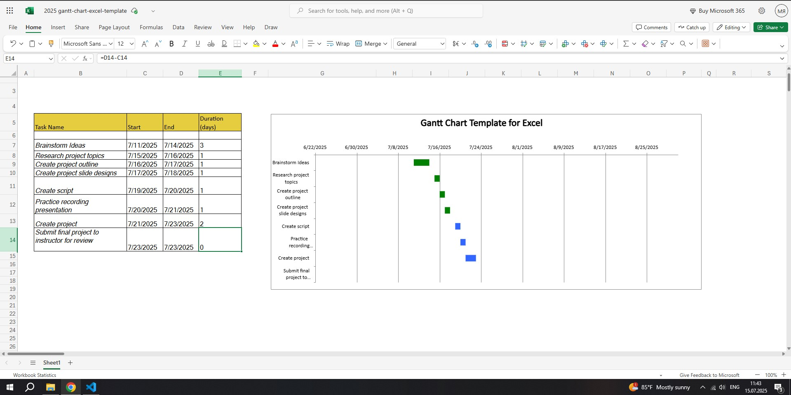

The goal of my final project is to create a multimedia presentation that explains the core concepts of HTML and CSS. The project will cover the structure of an HTML document, commonly used tags such as headings, paragraphs, links, images, and lists, as well as how to apply CSS for styling. I will also explain the difference between inline, internal, and external styles, and demonstrate how to create a basic responsive layout using CSS. This presentation is designed to help beginners understand how HTML builds the content of a website and how CSS controls its appearance. The project will include narrated slides and screen captures of code examples and live previews in a browser.
Creating the Gantt chart and planning my final project helped me understand the importance of time management in web development. I learned how to break a project into smaller steps like brainstorming, outlining, scripting, and recording. It also showed me how valuable project planning tools like Gantt charts are for organizing work and meeting deadlines. I can apply this skill in future environments where I need to manage client websites or school assignments. I also learned how to connect HTML files, use Visual Studio Code for development, and track changes using GitHub. These are practical tools I will continue using in real-world scenarios.
